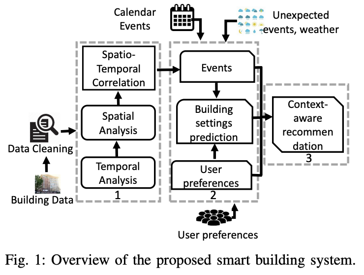

Research
This pages states some details about the research work I am currently doing and have done.
As an undergraduate CS student at UVA, I work under Dr. Haiying shen in Pervasive Communications Laboratory. My work is supervised by Ankur Sarker.We are currently focusing on generative models (namely, GAN and VAE) and their applications in self-driving.
Deep Learning Based Occupants’ Activity Prediction Towards Designing A Smart Building Assistant System
In Fall 2019, our research primarily focused on the application of deep learning in smart buildings. Several Ph.D. students in the lab and I propose a smart building assistance system consisting of different sensors data analysis and DNN-based prediction model to improve the comfort level of building occupants and reduce energy consumption.- 
-
We collected a year-long smart building dataset from four different data sources (i.e., sensors, calendar,
weather, and survey). Then we proposed a support vector regression based prediction model and a hybrid DNN model
consisting of several RNN blocks and a feed-forward DNN block so that different physical features (e.g.,
lighting) can be predicted for different building activities (e.g., meeting).
Extensive experimental studies was conducted to evaluate the performance of the proposed prediction models and the activity-wise comfort levels. Experiments reveal that the proposed system is able to increase occupants’ comfortability by adaptively changing the indoor environmental features (e.g., temperature) and reducing the gaps between indoor and outdoor environments.
Check out the paper for more details.
Bruna Faitão Balvedi, Enedir Ghisi, Roberto Lamberts
Implementation of a fully distributed load rebalancing algorithm on MapReduce
In Spring 2019, I worked with Haoyu Wang and Zetian Liu on a Hadoop MapReduce project. We modified the source code of MapReduce so that we could implement a fully distributed load rebalancing algorithm on MapReduce. The ultimate goal is to realize selective data replications among diffetent datacenters.The load rebalancing algorithm is proposed and its effectiveness is thoroughly discussed and tested in below two papers.
Guoxin Liu, Haiying Shen, Harrison Chandler